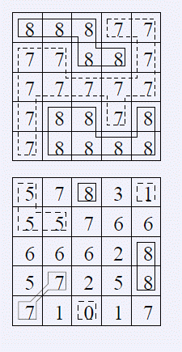

第一行包含一个正整数n，表示地图的大小（1<=n<=1000）。接下来一个n*n的矩阵，表示地图上每个格子的高
度。(0<=w<=1000000000)
FGD小朋友特别喜欢爬山，在爬山的时候他就在研究山峰和山谷。为了能够让他对他的旅程有一个安排，他想
知道山峰和山谷的数量。给定一个地图，为FGD想要旅行的区域，地图被分为n*n的网格，每个格子(i,j) 的高度w(
i,j)是给定的。若两个格子有公共顶点，那么他们就是相邻的格子。（所以与(i,j)相邻的格子有(i?1, j?1),(i?1
,j),(i?1,j+1),(i,j?1),(i,j+1),(i+1,j?1),(i+1,j),(i+1,j+1)）。我们定义一个格子的集合S为山峰（山谷）当
且仅当：1.S的所有格子都有相同的高度。2.S的所有格子都联通3.对于s属于S，与s相邻的s’不属于S。都有ws >
ws’（山峰），或者ws < ws’（山谷）。你的任务是，对于给定的地图，求出山峰和山谷的数量，如果所有格子
都有相同的高度，那么整个地图即是山峰，又是山谷。
第一行包含一个正整数n，表示地图的大小（1<=n<=1000）。接下来一个n*n的矩阵，表示地图上每个格子的高
度。(0<=w<=1000000000)
应包含两个数，分别表示山峰和山谷的数量。
输入样例1
5
8 8 8 7 7
7 7 8 8 7
7 7 7 7 7
7 8 8 7 8
7 8 8 8 8
输入样例2
5
5 7 8 3 1
5 5 7 6 6
6 6 6 2 8
5 7 2 5 8
7 1 0 1 7
输出样例1
2 1
输出样例2
3 3
